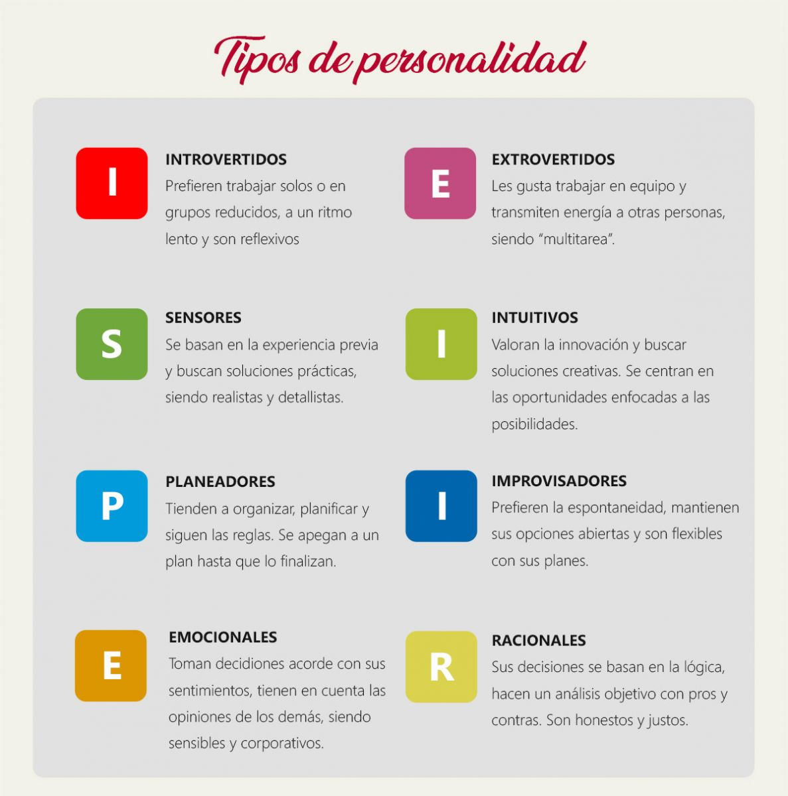

El poder de Asterion se ha desplegado a lo largo del mundo, pero es necesario que sepas como es que se volverá tan entrañable con nosotros, mediante la implementación de la AI, pues esta te recononocerá mediante una mini encuesta al momento de realizar el activado del OS, conociendote y sabiendo como actuar para serte más factible. Conoce las personalidades en las que se basa nuestra AI
Jung dividió los tipos de personalidad en introvertidos y extrovertidos, y desde estos construyó los tipos de personalidad. Según el psicólogo y psiquiatra, los introvertidos son tímidos, dirigen su atención hacia sus propios estados internos y a menudo se les dificulta estar en compañía; mientras que la personalidad extrovertida se caracteriza por la estimulación a lo que ocurre alrededor: son sociables, les gusta estar con gente y no se sienten incómodos ante situaciones sociales desafiantes. Desde esas premisas Jung constituyen los ocho tipos de personalidad.
